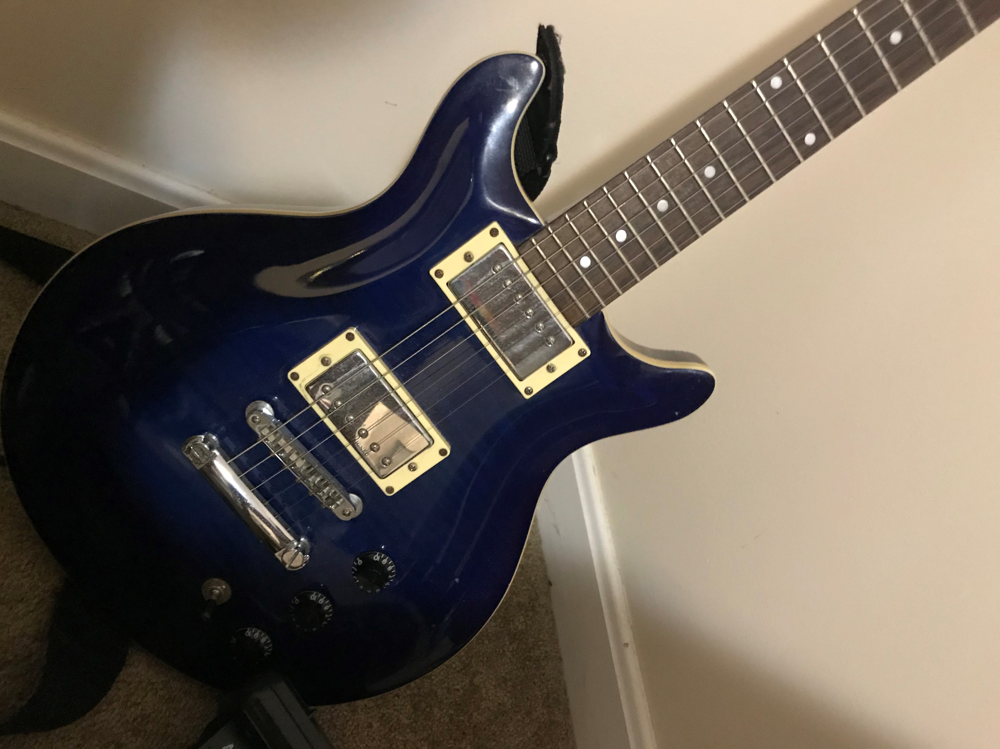

Hello, this website for proving why guitars are so cool.

Hamer XT-Series Double Cut electric guitar in transparent blue Standard F/T>
I bought this electronic guitar at a guitar shop in Bangor.
You can switch the pickup control so that the sound can be both sharp and mild.
>
-Home
- Squier Bullet HSS Stratocaster Electric Guitar 2-Color Sunburst
- Fender Japan Aerodyne Jazz Bass AJB OCR